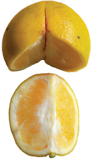

The orange is divided into three equal parts.

One piece of
the orange is
removed.
The piece of
the orange
removed is
one-third.

One-third, 13.
The remaining
two pieces of the
orange are two-
thirds.

Two-thirds, 23.
Activity
Let us play a one-third and two-thirds game.
We are three pupils. We are playing a one-third and
two-thirds game. We stand in a straight line. One of us
in the middle holds hands with the rest. Now, we are
one whole object as the picture shows.
105
105 The orange is divided into three equal parts. One piece of the orange is removed. The piece of the orange removed is one-third. One-third, 1 over 3. The remaining two pieces of the orange are two-thirds. Two-thirds, 2 over 3. Activity. Let us play a one-third and two-thirds game. We are three pupils. We are playing a one-third and two-thirds game. We stand in a straight line. One of us in the middle holds hands with the rest. Now, we are one whole object, as the picture shows.